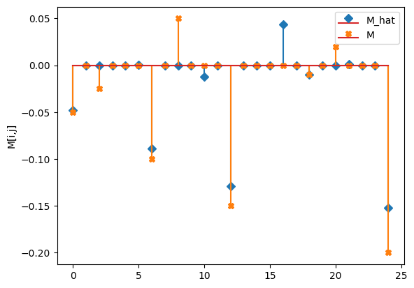
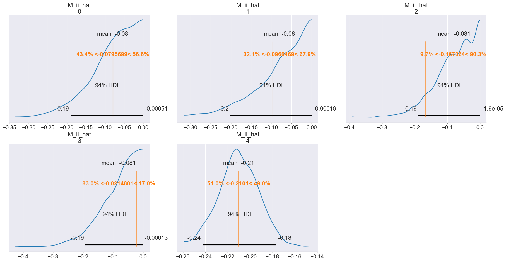
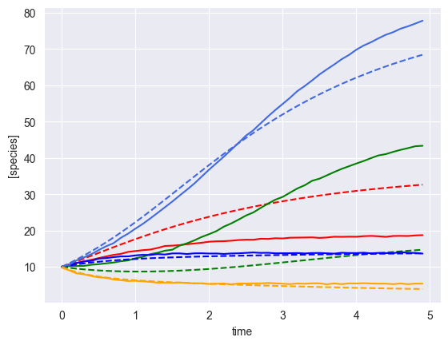
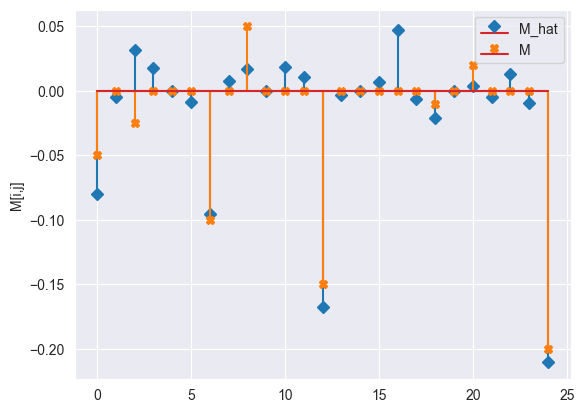
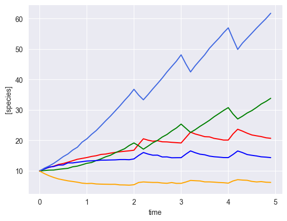
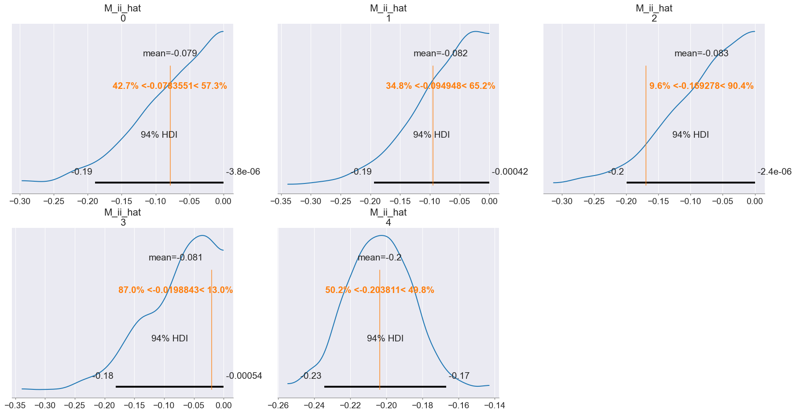
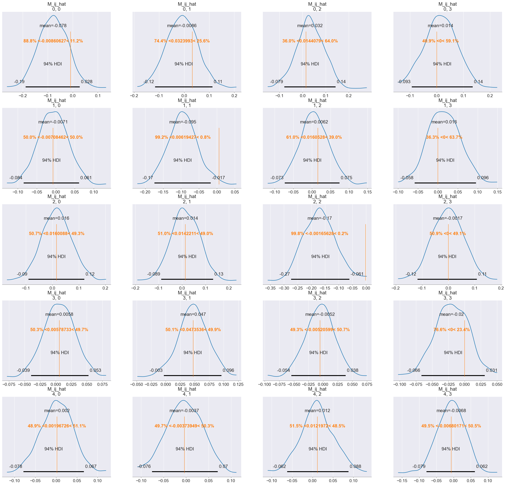
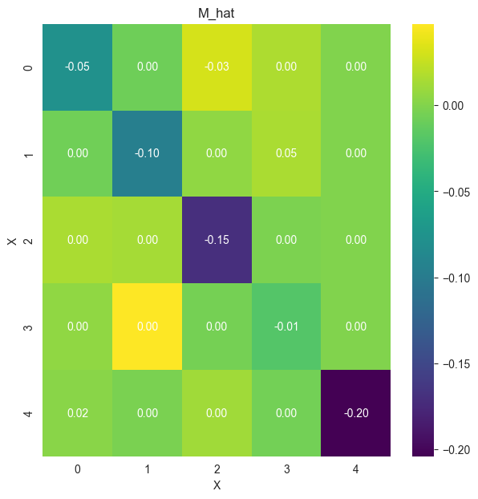
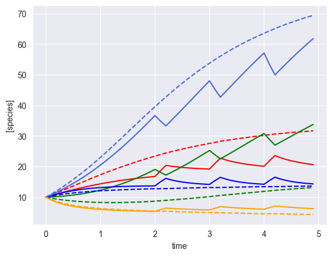

[1]:
from mimic.utilities import *
from mimic.model_infer.infer_gLV_bayes import *
from mimic.model_infer import *
from mimic.model_simulate import *
from mimic.model_simulate.sim_gLV import *
import pandas as pd
import numpy as np
import seaborn as sns
import matplotlib.pyplot as plt
WARNING (pytensor.tensor.blas): Using NumPy C-API based implementation for BLAS functions.
Used Bayesian inference to infer the parameters of a (linearised) gLV model¶
The generalized Lotka-Volterra equation takes the form
\[\frac{dX_i}{dt} = \mu_i X_i + X_i M_{ij} X_j + X_i \epsilon_{il} u_l\]
where: - \(X_i\) is the concentration of a species - \(\mu_i\) is its specific growth rate - \(M_{ij}\) is the effect of the interaction of species \(i\) on species \(j\) - \(\epsilon_{il}\) is the susceptibility to the time-dependent perturbation \(u_l\)
Five species, single time course¶
[2]:
# In this example n >> p and it it is basically same as standard regression
# We have to be careful as most of these gLV models are very weakly identifiable
set_all_seeds(1234)
# SETUP MODEL
# establish size of model
num_species = 5
# construct interaction matrix
# TODO do this programmatically
M = np.zeros((num_species, num_species))
np.fill_diagonal(M, [-0.05, -0.1, -0.15, -0.01, -0.2])
M[0, 2] = -0.025
M[1, 3] = 0.05
M[4, 0] = 0.02
# construct growth rates matrix
mu = np.random.lognormal(0.01, 0.5, num_species)
print(mu.shape)
# instantiate simulator
simulator = sim_gLV(num_species=num_species,
M=M,
mu=mu)
simulator.print_parameters()
# PRODUCE SIMULATED RESULTS
# initial conditions
init_species = 10 * np.ones(num_species)
times = np.arange(0, 5, 0.1)
yobs, init_species, mu, M, _ = simulator.simulate(times=times, init_species=init_species)
# add some gaussian noise
yobs = yobs + np.random.normal(loc=0, scale=0.1, size=yobs.shape)
# plot simulation
plot_gLV(yobs, times)
(5,)
Model parameters:
Model: gLV
num_species: 5
mu: [1.28 0.56 2.07 0.86 0.7 ]
M: [[-0.05 0. -0.03 0. 0. ]
[ 0. -0.1 0. 0.05 0. ]
[ 0. 0. -0.15 0. 0. ]
[ 0. 0. 0. -0.01 0. ]
[ 0.02 0. 0. 0. -0.2 ]]
epsilon: []
Using the following parameters for gLV simulation: {'num_species': 5, 'mu': array([1.27853844, 0.55683415, 2.06752757, 0.86387608, 0.70448068]), 'M': array([[-0.05 , 0. , -0.025, 0. , 0. ],
[ 0. , -0.1 , 0. , 0.05 , 0. ],
[ 0. , 0. , -0.15 , 0. , 0. ],
[ 0. , 0. , 0. , -0.01 , 0. ],
[ 0.02 , 0. , 0. , 0. , -0.2 ]]), 'epsilon': array([], shape=(5, 0), dtype=float64)}

Bayesian inference (no shrinkage)¶
First we will do Bayesian inference without any shrinkage priors
[3]:
import arviz as az
import matplotlib.pyplot as plt
import numpy as np
import pymc as pm
import pytensor.tensor as at
import pickle
import cloudpickle
[12]:
X, F = linearize_time_course_16S(yobs, times)
print(X.shape)
print(F.shape)
print(X[:10,:])
(49, 6)
(49, 5)
[[ 9.87310057 9.91611571 10.05539213 9.94959573 9.92115598 1. ]
[10.67466151 10.09378207 10.57170942 10.87624681 9.0862456 1. ]
[11.13574566 10.21567292 11.21428947 11.58346636 8.3845881 1. ]
[11.51931019 10.25272867 11.42118538 12.45709839 7.81338749 1. ]
[12.08503303 10.49451077 11.88191256 13.51880084 7.33290388 1. ]
[12.38707075 10.66317103 11.90895485 14.64997559 7.01681764 1. ]
[12.8360788 10.81884958 12.60273316 15.53265942 6.71496677 1. ]
[13.31012198 11.31034032 12.58874581 16.80695512 6.49405924 1. ]
[13.79124977 11.545218 12.81691228 17.7406583 6.2643849 1. ]
[14.0736579 11.98497742 12.99564456 19.41650831 5.95973998 1. ]]
[5]:
# Perform Bayesian inference
inference = infergLVbayes(X, F, mu, M)
idata = inference.run_bayes_gLV()
Auto-assigning NUTS sampler...
Initializing NUTS using jitter+adapt_diag...
Multiprocess sampling (4 chains in 4 jobs)
NUTS: [sigma, mu_hat, M_ii_hat_p, M_ij_hat]
Sampling 4 chains for 1_000 tune and 1_000 draw iterations (4_000 + 4_000 draws total) took 107 seconds.
There were 4 divergences after tuning. Increase `target_accept` or reparameterize.



[6]:
# Print summary
summary = az.summary(idata, var_names=["mu_hat", "M_ii_hat", "M_ij_hat", "M_hat", "sigma"])
print(summary[["mean", "sd", "r_hat"]])
# Save posterior samples to file
az.to_netcdf(idata, 'model_posterior.nc')
/Users/chaniaclare/anaconda3/bin/python3.12/lib/python3.12/site-packages/arviz/stats/diagnostics.py:592: RuntimeWarning: invalid value encountered in scalar divide
(between_chain_variance / within_chain_variance + num_samples - 1) / (num_samples)
/Users/chaniaclare/anaconda3/bin/python3.12/lib/python3.12/site-packages/arviz/stats/diagnostics.py:592: RuntimeWarning: invalid value encountered in scalar divide
(between_chain_variance / within_chain_variance + num_samples - 1) / (num_samples)
/Users/chaniaclare/anaconda3/bin/python3.12/lib/python3.12/site-packages/arviz/stats/diagnostics.py:592: RuntimeWarning: invalid value encountered in scalar divide
(between_chain_variance / within_chain_variance + num_samples - 1) / (num_samples)
/Users/chaniaclare/anaconda3/bin/python3.12/lib/python3.12/site-packages/arviz/stats/diagnostics.py:592: RuntimeWarning: invalid value encountered in scalar divide
(between_chain_variance / within_chain_variance + num_samples - 1) / (num_samples)
mean sd r_hat
mu_hat[0, 0] 0.838 0.569 1.0
mu_hat[0, 1] 0.700 0.516 1.0
mu_hat[0, 2] 0.913 0.609 1.0
mu_hat[0, 3] 0.753 0.547 1.0
mu_hat[0, 4] 1.114 0.107 1.0
M_ii_hat[0] -0.081 0.060 1.0
M_ii_hat[1] -0.080 0.061 1.0
M_ii_hat[2] -0.081 0.061 1.0
M_ii_hat[3] -0.079 0.061 1.0
M_ii_hat[4] -0.211 0.018 1.0
M_ij_hat[0, 0] -0.073 0.062 1.0
M_ij_hat[0, 1] -0.009 0.060 1.0
M_ij_hat[0, 2] 0.059 0.062 1.0
M_ij_hat[0, 3] 0.018 0.061 1.0
M_ij_hat[1, 0] -0.004 0.039 1.0
M_ij_hat[1, 1] -0.097 0.040 1.0
M_ij_hat[1, 2] 0.025 0.040 1.0
M_ij_hat[1, 3] 0.020 0.040 1.0
M_ij_hat[2, 0] 0.026 0.061 1.0
M_ij_hat[2, 1] 0.005 0.059 1.0
M_ij_hat[2, 2] -0.142 0.061 1.0
M_ij_hat[2, 3] -0.005 0.059 1.0
M_ij_hat[3, 0] 0.004 0.025 1.0
M_ij_hat[3, 1] 0.048 0.025 1.0
M_ij_hat[3, 2] -0.017 0.025 1.0
M_ij_hat[3, 3] -0.022 0.026 1.0
M_ij_hat[4, 0] 0.010 0.043 1.0
M_ij_hat[4, 1] -0.013 0.041 1.0
M_ij_hat[4, 2] 0.040 0.043 1.0
M_ij_hat[4, 3] -0.012 0.044 1.0
M_hat[0, 0] -0.073 0.062 1.0
M_hat[0, 1] -0.009 0.060 1.0
M_hat[0, 2] 0.059 0.062 1.0
M_hat[0, 3] 0.018 0.061 1.0
M_hat[0, 4] 0.000 0.000 NaN
M_hat[1, 0] -0.004 0.039 1.0
M_hat[1, 1] -0.097 0.040 1.0
M_hat[1, 2] 0.025 0.040 1.0
M_hat[1, 3] 0.020 0.040 1.0
M_hat[1, 4] 0.000 0.000 NaN
M_hat[2, 0] 0.026 0.061 1.0
M_hat[2, 1] 0.005 0.059 1.0
M_hat[2, 2] -0.142 0.061 1.0
M_hat[2, 3] -0.005 0.059 1.0
M_hat[2, 4] 0.000 0.000 NaN
M_hat[3, 0] 0.004 0.025 1.0
M_hat[3, 1] 0.048 0.025 1.0
M_hat[3, 2] -0.017 0.025 1.0
M_hat[3, 3] -0.022 0.026 1.0
M_hat[3, 4] 0.000 0.000 NaN
M_hat[4, 0] 0.010 0.043 1.0
M_hat[4, 1] -0.013 0.041 1.0
M_hat[4, 2] 0.040 0.043 1.0
M_hat[4, 3] -0.012 0.044 1.0
M_hat[4, 4] -0.211 0.018 1.0
sigma[0] 0.129 0.006 1.0
[6]:
'model_posterior.nc'
[7]:
# 4 chains x 100 draws x 5 x 5 species
print( idata.posterior["M_hat"].values.shape )
print( idata.posterior["mu_hat"].values.shape )
# # get median posterior values
M_h = np.median(idata.posterior["M_hat"].values, axis=(0,1))
mu_h = np.median(idata.posterior["mu_hat"].values, axis=(0, 1))
mu_h = mu_h.flatten()
predictor = sim_gLV(num_species=num_species,
M=M_h,
mu=mu_h
)
yobs_h, _, _, _, _ = predictor.simulate(times=times, init_species=init_species)
plot_fit_gLV(yobs, yobs_h, times)
compare_params(mu=(mu, mu_h), M=(M, M_h) )
(4, 1000, 5, 5)
(4, 1000, 1, 5)
Using the following parameters for gLV simulation: {'num_species': 5, 'mu': array([0.75816452, 0.59185543, 0.81924395, 0.65531003, 1.11578933]), 'M': array([[-0.07287711, -0.00800594, 0.05881338, 0.01787411, 0. ],
[-0.00314961, -0.09733548, 0.02519653, 0.01962812, 0. ],
[ 0.02754037, 0.00484975, -0.1417304 , -0.00558107, 0. ],
[ 0.00316543, 0.04861419, -0.01789472, -0.02200499, 0. ],
[ 0.01082258, -0.01228828, 0.04099088, -0.01154591, -0.21079663]]), 'epsilon': array([], shape=(5, 0), dtype=float64)}
mu_hat/mu:
[0.75816452 0.59185543 0.81924395 0.65531003 1.11578933]
[1.27853844 0.55683415 2.06752757 0.86387608 0.70448068]
M_hat/M:
[[-0.07 -0.01 0.06 0.02 0. ]
[-0. -0.1 0.03 0.02 0. ]
[ 0.03 0. -0.14 -0.01 0. ]
[ 0. 0.05 -0.02 -0.02 0. ]
[ 0.01 -0.01 0.04 -0.01 -0.21]]
[[-0.05 0. -0.025 0. 0. ]
[ 0. -0.1 0. 0.05 0. ]
[ 0. 0. -0.15 0. 0. ]
[ 0. 0. 0. -0.01 0. ]
[ 0.02 0. 0. 0. -0.2 ]]


[8]:
#plot_interaction_matrix(M_h)
infer_h = infergLVbayes(M_h)
matrix = infer_h.plot_interaction_matrix(M = M, M_h =M_h)

Bayesian inference with shrinkage¶
Now we will do inference with the Horseshoe prior
[6]:
nX = num_species
n_obs = times.shape[0] - 1
noise_stddev = 0.1
# Params for shrinkage on M_ij (non diagonal elements)
DA = nX*nX - nX
DA0 = 3 # expected number of non zero entries in M_ij
N = n_obs - 2
[8]:
inference = infergLVbayes(X, F, mu, M, DA=DA, DA0=DA0, N=N, noise_stddev=noise_stddev)
idata = inference.run_bayes_gLV_shrinkage()
Auto-assigning NUTS sampler...
Initializing NUTS using jitter+adapt_diag...
Multiprocess sampling (4 chains in 4 jobs)
NUTS: [sigma, mu_hat, M_ii_hat, c2, tau, lam, M_ij_hat]
IOPub message rate exceeded.
The Jupyter server will temporarily stop sending output
to the client in order to avoid crashing it.
To change this limit, set the config variable
`--ServerApp.iopub_msg_rate_limit`.
Current values:
ServerApp.iopub_msg_rate_limit=1000.0 (msgs/sec)
ServerApp.rate_limit_window=3.0 (secs)
Sampling 4 chains for 2_000 tune and 1_000 draw iterations (8_000 + 4_000 draws total) took 122 seconds.
There were 1009 divergences after tuning. Increase `target_accept` or reparameterize.
The rhat statistic is larger than 1.01 for some parameters. This indicates problems during sampling. See https://arxiv.org/abs/1903.08008 for details
The effective sample size per chain is smaller than 100 for some parameters. A higher number is needed for reliable rhat and ess computation. See https://arxiv.org/abs/1903.08008 for details



[9]:
# print summary
summary = az.summary(idata, var_names=["mu_hat", "M_ii_hat", "M_ij_hat", "M_hat", "sigma"])
print(summary[["mean", "sd", "r_hat"]])
# Write posterior samples to file
az.to_netcdf(idata, 'model_posterior.nc')
/Users/chaniaclare/anaconda3/bin/python3.12/lib/python3.12/site-packages/arviz/stats/diagnostics.py:592: RuntimeWarning: invalid value encountered in scalar divide
(between_chain_variance / within_chain_variance + num_samples - 1) / (num_samples)
/Users/chaniaclare/anaconda3/bin/python3.12/lib/python3.12/site-packages/arviz/stats/diagnostics.py:592: RuntimeWarning: invalid value encountered in scalar divide
(between_chain_variance / within_chain_variance + num_samples - 1) / (num_samples)
/Users/chaniaclare/anaconda3/bin/python3.12/lib/python3.12/site-packages/arviz/stats/diagnostics.py:592: RuntimeWarning: invalid value encountered in scalar divide
(between_chain_variance / within_chain_variance + num_samples - 1) / (num_samples)
/Users/chaniaclare/anaconda3/bin/python3.12/lib/python3.12/site-packages/arviz/stats/diagnostics.py:592: RuntimeWarning: invalid value encountered in scalar divide
(between_chain_variance / within_chain_variance + num_samples - 1) / (num_samples)
mean sd r_hat
mu_hat[0, 0] 0.891 0.287 1.10
mu_hat[0, 1] 0.674 0.280 1.21
mu_hat[0, 2] 1.489 0.417 1.08
mu_hat[0, 3] 0.883 0.214 1.10
mu_hat[0, 4] 1.141 0.098 1.22
M_ii_hat[0] -0.123 0.075 1.13
M_ii_hat[1] -0.111 0.085 1.23
M_ii_hat[2] -0.117 0.077 1.06
M_ii_hat[3] -0.124 0.073 1.26
M_ii_hat[4] -0.215 0.016 1.24
M_ij_hat[0, 0] -0.040 0.022 1.20
M_ij_hat[0, 1] 0.003 0.014 1.25
M_ij_hat[0, 2] -0.004 0.019 1.06
M_ij_hat[0, 3] -0.002 0.011 1.12
M_ij_hat[1, 0] 0.001 0.007 1.07
M_ij_hat[1, 1] -0.080 0.032 1.06
M_ij_hat[1, 2] 0.001 0.007 1.06
M_ij_hat[1, 3] -0.004 0.008 1.14
M_ij_hat[2, 0] -0.007 0.020 1.05
M_ij_hat[2, 1] -0.001 0.013 1.06
M_ij_hat[2, 2] -0.105 0.039 1.24
M_ij_hat[2, 3] -0.001 0.011 1.02
M_ij_hat[3, 0] -0.002 0.004 1.03
M_ij_hat[3, 1] 0.038 0.018 1.05
M_ij_hat[3, 2] -0.001 0.004 1.21
M_ij_hat[3, 3] -0.008 0.005 1.05
M_ij_hat[4, 0] 0.003 0.013 1.06
M_ij_hat[4, 1] -0.022 0.040 1.07
M_ij_hat[4, 2] 0.010 0.020 1.10
M_ij_hat[4, 3] 0.001 0.011 1.06
M_hat[0, 0] -0.040 0.022 1.20
M_hat[0, 1] 0.003 0.014 1.25
M_hat[0, 2] -0.004 0.019 1.06
M_hat[0, 3] -0.002 0.011 1.12
M_hat[0, 4] 0.000 0.000 NaN
M_hat[1, 0] 0.001 0.007 1.07
M_hat[1, 1] -0.080 0.032 1.06
M_hat[1, 2] 0.001 0.007 1.06
M_hat[1, 3] -0.004 0.008 1.14
M_hat[1, 4] 0.000 0.000 NaN
M_hat[2, 0] -0.007 0.020 1.05
M_hat[2, 1] -0.001 0.013 1.06
M_hat[2, 2] -0.105 0.039 1.24
M_hat[2, 3] -0.001 0.011 1.02
M_hat[2, 4] 0.000 0.000 NaN
M_hat[3, 0] -0.002 0.004 1.03
M_hat[3, 1] 0.038 0.018 1.05
M_hat[3, 2] -0.001 0.004 1.21
M_hat[3, 3] -0.008 0.005 1.05
M_hat[3, 4] 0.000 0.000 NaN
M_hat[4, 0] 0.003 0.013 1.06
M_hat[4, 1] -0.022 0.040 1.07
M_hat[4, 2] 0.010 0.020 1.10
M_hat[4, 3] 0.001 0.011 1.06
M_hat[4, 4] -0.215 0.016 1.24
sigma[0] 0.127 0.008 1.29
[9]:
'model_posterior.nc'
[10]:
# get posterior medians
M_h = np.median(idata.posterior["M_hat"].values, axis=(0,1))
mu_h = np.median(idata.posterior["mu_hat"].values, axis=(0, 1))
mu_h = mu_h.flatten()
# compare median posterior values to true values
compare_params(mu=(mu, mu_h), M=(M, M_h) )
#plot_interaction_matrix(M_h)
infer_h = infergLVbayes(M_h)
matrix = infer_h.plot_interaction_matrix(M = M, M_h =M_h)
# Assess fit
predictor = sim_gLV(num_species=num_species,
M=M_h,
mu=mu_h
)
yobs_h, _, _, _, _ = predictor.simulate(times=times, init_species=init_species)
plot_fit_gLV(yobs, yobs_h, times)
mu_hat/mu:
[0.8587488 0.66145033 1.59609534 0.86140082 1.1341146 ]
[1.27853844 0.55683415 2.06752757 0.86387608 0.70448068]
M_hat/M:
[[-0.04 0. -0. -0. 0. ]
[ 0. -0.09 -0. -0. 0. ]
[-0. -0. -0.11 0. 0. ]
[-0. 0.04 -0. -0.01 0. ]
[ 0. -0. 0. 0. -0.22]]
[[-0.05 0. -0.025 0. 0. ]
[ 0. -0.1 0. 0.05 0. ]
[ 0. 0. -0.15 0. 0. ]
[ 0. 0. 0. -0.01 0. ]
[ 0.02 0. 0. 0. -0.2 ]]
Using the following parameters for gLV simulation: {'num_species': 5, 'mu': array([0.8587488 , 0.66145033, 1.59609534, 0.86140082, 1.1341146 ]), 'M': array([[-3.98187137e-02, 6.39105165e-05, -2.16950259e-03,
-1.98006389e-05, 0.00000000e+00],
[ 2.48445861e-04, -8.89157125e-02, -2.01827651e-04,
-1.09870002e-03, 0.00000000e+00],
[-5.94317268e-04, -7.60239675e-04, -1.13599146e-01,
3.25230235e-04, 0.00000000e+00],
[-1.24465973e-03, 4.37263741e-02, -2.32610594e-05,
-9.26386095e-03, 0.00000000e+00],
[ 8.22445701e-04, -2.34651993e-03, 2.63116546e-03,
8.06624143e-04, -2.15126685e-01]]), 'epsilon': array([], shape=(5, 0), dtype=float64)}




Bayesian inference with shrinkage and a perturbation with unknown interactions¶
Now we will do inference with the Horseshoe prior for shrinkage but now we include a perturbation (assuming unknown interaction terms). This gives more identifiability
[13]:
# use all previous definitions of mu, M etc
# construct perturbation matrix
num_perturbations = 1
epsilon = np.zeros([num_species, num_perturbations])
epsilon[:, 0] = [1, -1, 1, -1, 1]
def pert_fn(t):
if 2.0 <= t < 2.2 or 3.0 <= t < 3.2 or 4.0 <= t < 4.2:
return np.array([1])
else:
return np.array([0])
# relinearise
u = np.array([pert_fn(t)[0] for t in times])
u = u.astype(int)
print('perturbation:\n', u)
X, F = linearize_time_course_16S_u(yobs, times, u)
# instantiate simulator
simulator = sim_gLV(num_species=num_species,
num_perturbations=num_perturbations,
M=M,
mu=mu,
epsilon=epsilon)
simulator.print_parameters()
yobs, init_species, mu, M, _ = simulator.simulate(times=times, init_species=init_species, u=pert_fn)
# add some gaussian noise
yobs = yobs + np.random.normal(loc=0, scale=0.1, size=yobs.shape)
# plot simulation
plot_gLV(yobs, times)
perturbation:
[0 0 0 0 0 0 0 0 0 0 0 0 0 0 0 0 0 0 0 0 1 1 0 0 0 0 0 0 0 0 1 1 0 0 0 0 0
0 0 0 1 1 0 0 0 0 0 0 0 0]
Model parameters:
Model: gLV
num_species: 5
mu: [1.28 0.56 2.07 0.86 0.7 ]
M: [[-0.05 0. -0.03 0. 0. ]
[ 0. -0.1 0. 0.05 0. ]
[ 0. 0. -0.15 0. 0. ]
[ 0. 0. 0. -0.01 0. ]
[ 0.02 0. 0. 0. -0.2 ]]
epsilon: [[ 1.]
[-1.]
[ 1.]
[-1.]
[ 1.]]
Using the following parameters for gLV simulation: {'num_species': 5, 'mu': array([1.27853844, 0.55683415, 2.06752757, 0.86387608, 0.70448068]), 'M': array([[-0.05 , 0. , -0.025, 0. , 0. ],
[ 0. , -0.1 , 0. , 0.05 , 0. ],
[ 0. , 0. , -0.15 , 0. , 0. ],
[ 0. , 0. , 0. , -0.01 , 0. ],
[ 0.02 , 0. , 0. , 0. , -0.2 ]]), 'epsilon': array([[ 1.],
[-1.],
[ 1.],
[-1.],
[ 1.]])}

[14]:
nX = num_species
n_obs = times.shape[0] - 1
noise_stddev = 0.1
# Params for shrinkage on M_ij (non diagonal elements)
DA = nX*nX - nX
DA0 = 3 # expected number of non zero entries in M_ij
N = n_obs - 2
[15]:
inference = infergLVbayes(X, F, mu, M, DA=DA, DA0=DA0, N=N, noise_stddev=noise_stddev, epsilon=epsilon)
idata = inference.run_bayes_gLV_shrinkage_pert()
Auto-assigning NUTS sampler...
Initializing NUTS using jitter+adapt_diag...
Multiprocess sampling (4 chains in 4 jobs)
NUTS: [sigma, mu_hat, epsilon_hat, M_ii_hat, c2, tau, lam, M_ij_hat]
Sampling 4 chains for 2_000 tune and 1_000 draw iterations (8_000 + 4_000 draws total) took 109 seconds.
There were 471 divergences after tuning. Increase `target_accept` or reparameterize.
The rhat statistic is larger than 1.01 for some parameters. This indicates problems during sampling. See https://arxiv.org/abs/1903.08008 for details
The effective sample size per chain is smaller than 100 for some parameters. A higher number is needed for reliable rhat and ess computation. See https://arxiv.org/abs/1903.08008 for details




[16]:
# print summary
summary = az.summary(idata, var_names=["mu_hat", "M_hat", "epsilon_hat", "sigma"])
print(summary[["mean", "sd", "r_hat"]])
# Write posterior samples to file
az.to_netcdf(idata, 'model_posterior.nc')
/Users/chaniaclare/anaconda3/bin/python3.12/lib/python3.12/site-packages/arviz/stats/diagnostics.py:592: RuntimeWarning: invalid value encountered in scalar divide
(between_chain_variance / within_chain_variance + num_samples - 1) / (num_samples)
/Users/chaniaclare/anaconda3/bin/python3.12/lib/python3.12/site-packages/arviz/stats/diagnostics.py:592: RuntimeWarning: invalid value encountered in scalar divide
(between_chain_variance / within_chain_variance + num_samples - 1) / (num_samples)
/Users/chaniaclare/anaconda3/bin/python3.12/lib/python3.12/site-packages/arviz/stats/diagnostics.py:592: RuntimeWarning: invalid value encountered in scalar divide
(between_chain_variance / within_chain_variance + num_samples - 1) / (num_samples)
/Users/chaniaclare/anaconda3/bin/python3.12/lib/python3.12/site-packages/arviz/stats/diagnostics.py:592: RuntimeWarning: invalid value encountered in scalar divide
(between_chain_variance / within_chain_variance + num_samples - 1) / (num_samples)
mean sd r_hat
mu_hat[0, 0] 1.184 0.218 1.00
mu_hat[0, 1] 0.572 0.177 1.00
mu_hat[0, 2] 1.666 0.301 1.01
mu_hat[0, 3] 0.885 0.137 1.01
mu_hat[0, 4] 1.163 0.121 1.00
M_hat[0, 0] -0.057 0.021 1.00
M_hat[0, 1] 0.003 0.010 1.01
M_hat[0, 2] -0.008 0.022 1.01
M_hat[0, 3] -0.002 0.008 1.01
M_hat[0, 4] 0.000 0.000 NaN
M_hat[1, 0] 0.002 0.007 1.00
M_hat[1, 1] -0.071 0.036 1.01
M_hat[1, 2] 0.002 0.007 1.01
M_hat[1, 3] -0.003 0.010 1.01
M_hat[1, 4] 0.000 0.000 NaN
M_hat[2, 0] -0.014 0.030 1.00
M_hat[2, 1] 0.002 0.013 1.00
M_hat[2, 2] -0.113 0.039 1.01
M_hat[2, 3] -0.001 0.010 1.01
M_hat[2, 4] 0.000 0.000 NaN
M_hat[3, 0] 0.000 0.004 1.00
M_hat[3, 1] 0.034 0.018 1.01
M_hat[3, 2] -0.000 0.004 1.01
M_hat[3, 3] -0.008 0.005 1.01
M_hat[3, 4] 0.000 0.000 NaN
M_hat[4, 0] 0.004 0.010 1.00
M_hat[4, 1] -0.016 0.028 1.01
M_hat[4, 2] 0.002 0.010 1.00
M_hat[4, 3] 0.002 0.010 1.00
M_hat[4, 4] -0.214 0.019 1.00
epsilon_hat[0, 0] 0.953 0.050 1.00
epsilon_hat[0, 1] -1.002 0.052 1.00
epsilon_hat[0, 2] 0.822 0.051 1.00
epsilon_hat[0, 3] -0.993 0.052 1.00
epsilon_hat[0, 4] 0.938 0.050 1.00
sigma[0] 0.115 0.005 1.00
[16]:
'model_posterior.nc'
[15]:
# get posterior medians
M_h = np.median(idata.posterior["M_hat"].values, axis=(0,1))
mu_h = np.median(idata.posterior["mu_hat"].values, axis=(0, 1))
mu_h = mu_h.flatten()
e_h = np.median(idata.posterior["epsilon_hat"].values, axis=(0, 1))
# reshape e_h so it is the same shape as epsilon
e_h = e_h.reshape(epsilon.shape)
# compare median posterior values to true values
compare_params(mu=(mu, mu_h), M=(M, M_h), e=(epsilon, e_h))
#plot_interaction_matrix(M_h)
infer_h = infergLVbayes(M_h)
matrix = infer_h.plot_interaction_matrix(M = M, M_h =M_h)
# Assess fit
predictor = sim_gLV(num_species=num_species,
num_perturbations=num_perturbations,
M=M_h,
mu=mu_h,
epsilon=e_h)
print('epsilon:', epsilon)
print('epsilon_h:', e_h)
yobs, init_species, mu, M, _ = simulator.simulate(times=times, init_species=init_species, u=pert_fn)
yobs_h, _, _, _, _ = predictor.simulate(times=times, init_species=init_species, u=pert_fn)
plot_fit_gLV(yobs, yobs_h, times)
mu_hat/mu:
[0.94218262 0.64424149 1.50283656 0.89883375 1.10383288]
[1.27853844 0.55683415 2.06752757 0.86387608 0.70448068]
M_hat/M:
[[-0.04 0. -0. -0. 0. ]
[ 0. -0.07 0. -0. 0. ]
[-0. -0. -0.11 -0. 0. ]
[-0. 0.04 -0. -0.01 0. ]
[ 0. -0.01 0. -0. -0.21]]
[[-0.05 0. -0.025 0. 0. ]
[ 0. -0.1 0. 0.05 0. ]
[ 0. 0. -0.15 0. 0. ]
[ 0. 0. 0. -0.01 0. ]
[ 0.02 0. 0. 0. -0.2 ]]
e_hat/e:
[[ 0.01]
[ 0.04]
[-0.02]
[-0.01]
[ 0.08]]
[[ 1.]
[-1.]
[ 1.]
[-1.]
[ 1.]]
epsilon: [[ 1.]
[-1.]
[ 1.]
[-1.]
[ 1.]]
epsilon_h: [[ 0.00673812]
[ 0.03888195]
[-0.02260897]
[-0.00662845]
[ 0.08341004]]
Using the following parameters for gLV simulation: {'num_species': 5, 'mu': array([1.27853844, 0.55683415, 2.06752757, 0.86387608, 0.70448068]), 'M': array([[-0.05 , 0. , -0.025, 0. , 0. ],
[ 0. , -0.1 , 0. , 0.05 , 0. ],
[ 0. , 0. , -0.15 , 0. , 0. ],
[ 0. , 0. , 0. , -0.01 , 0. ],
[ 0.02 , 0. , 0. , 0. , -0.2 ]]), 'epsilon': array([[ 1.],
[-1.],
[ 1.],
[-1.],
[ 1.]])}
Using the following parameters for gLV simulation: {'num_species': 5, 'mu': array([0.94218262, 0.64424149, 1.50283656, 0.89883375, 1.10383288]), 'M': array([[-4.45472256e-02, 1.31865689e-03, -2.79795293e-04,
-5.81944628e-04, 0.00000000e+00],
[ 1.67323148e-04, -7.49099576e-02, 2.45631580e-05,
-1.80065411e-03, 0.00000000e+00],
[-1.14268189e-03, -7.39764954e-05, -1.09520015e-01,
-4.35810565e-04, 0.00000000e+00],
[-4.19679074e-04, 3.58534155e-02, -2.06313862e-04,
-8.43987213e-03, 0.00000000e+00],
[ 5.32555204e-04, -1.00365886e-02, 3.80905094e-03,
-6.40410749e-05, -2.10260444e-01]]), 'epsilon': array([[ 0.00673812],
[ 0.03888195],
[-0.02260897],
[-0.00662845],
[ 0.08341004]])}

